This week the assignment was to design something and make it using CNC. After this we had to
showcase post-processing of a design using fabrication processes.
1. An ode to USAP
This week I wanted to do something a little closer to home. My mom founded a school in Zimbabwe for
high-achieving, low-income students called the USAP Community School. This week I decided to make a wall
decoration of Zimbabwe using pocket cuts to give a 3D effect with the logo of the school in the center
of the map.
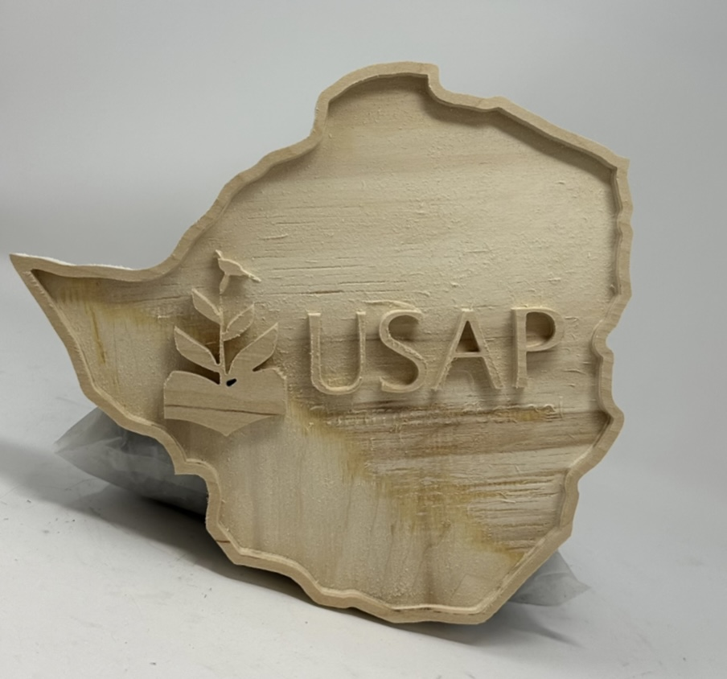
List of materials and resources used:
CNC ShopBot Mill
Autodesk Fusion 360 and Blender software for modelling
Steps for making the USAP decoration:
Designing the Layout
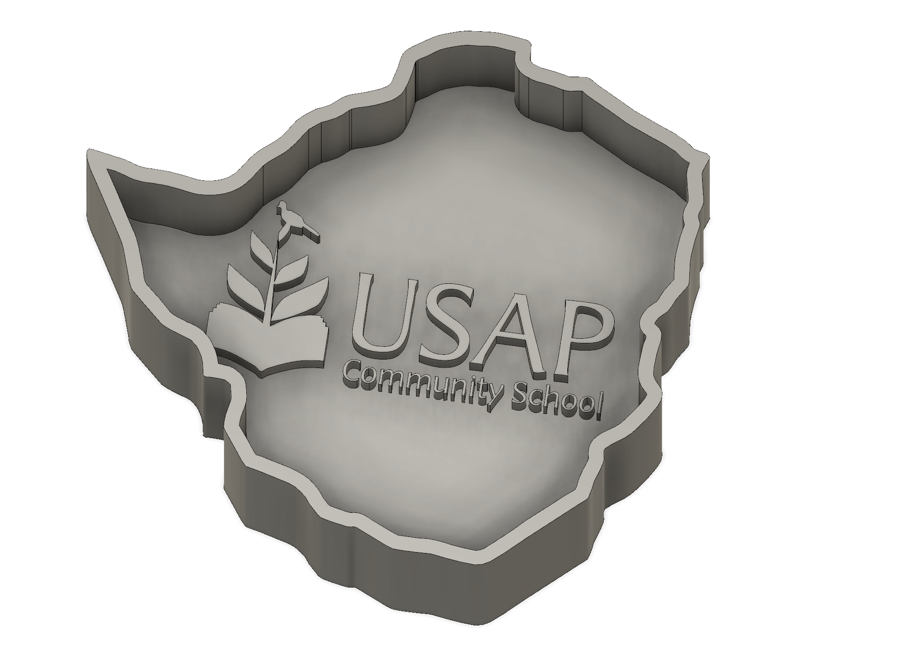
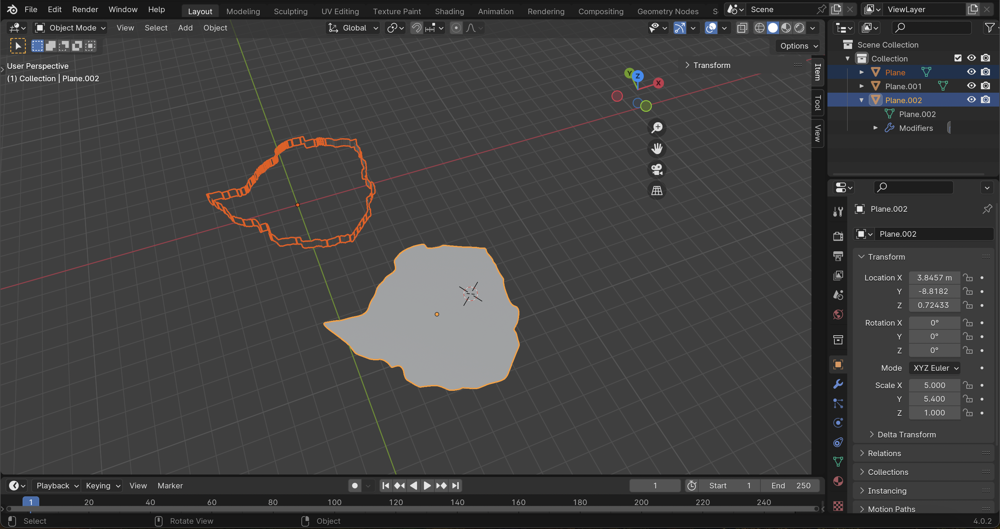
I used Fusion and Blender to design the wall decoration. I used fusion to create the logo and
used this Blender tutorial to convert
an image of Zimbabwe to a sketch.
I used the offset feature in fusion to create an outer layer of the map.
CNC Milling the Design
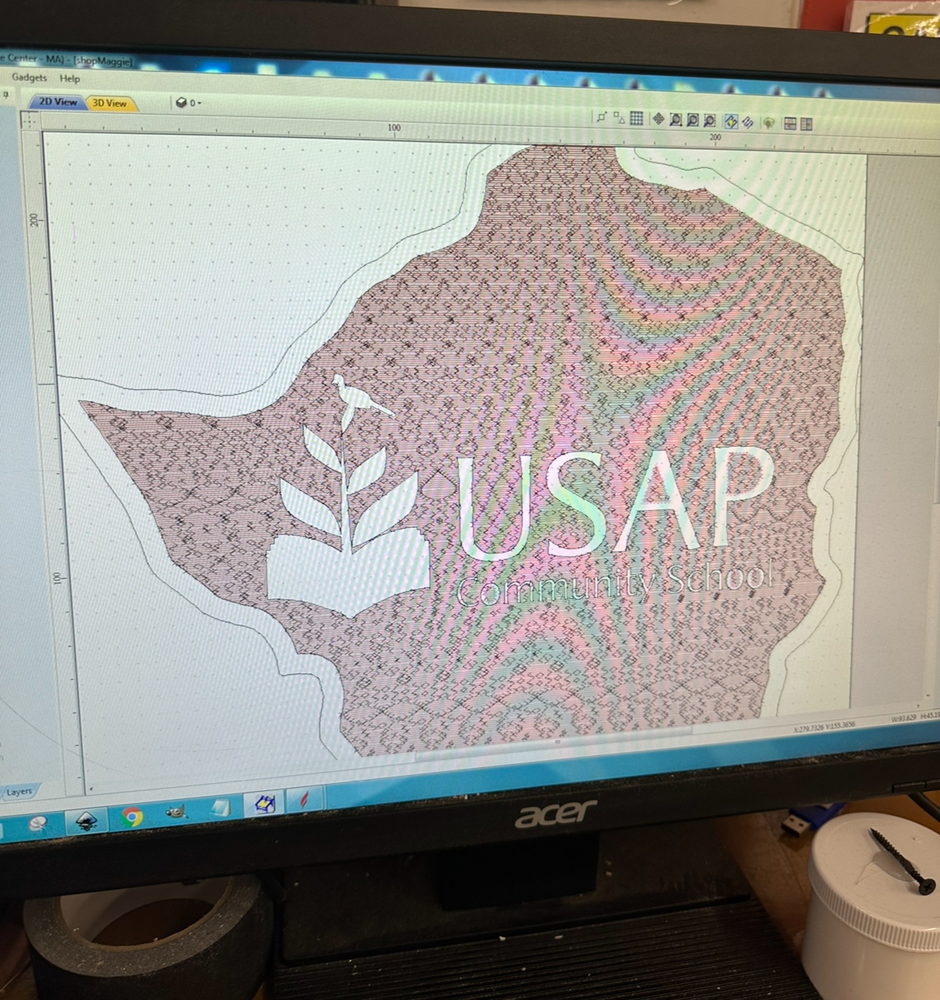
I used the pocket cut method with a finer end mill (1/8 inch) to get the inside lettering
detail of the logo. However, the lettering for the "Community School" portion ended up
being too thin to hold and broke off during the milling process.
I was still pleased with the results because the detail of the logo and larger lettering looks
great.
I then cut out the map after a long pocket cut process. I used the 1/4 inch end mill. I then
used the belt sander to remove wood splinters from the edges.
Final Look
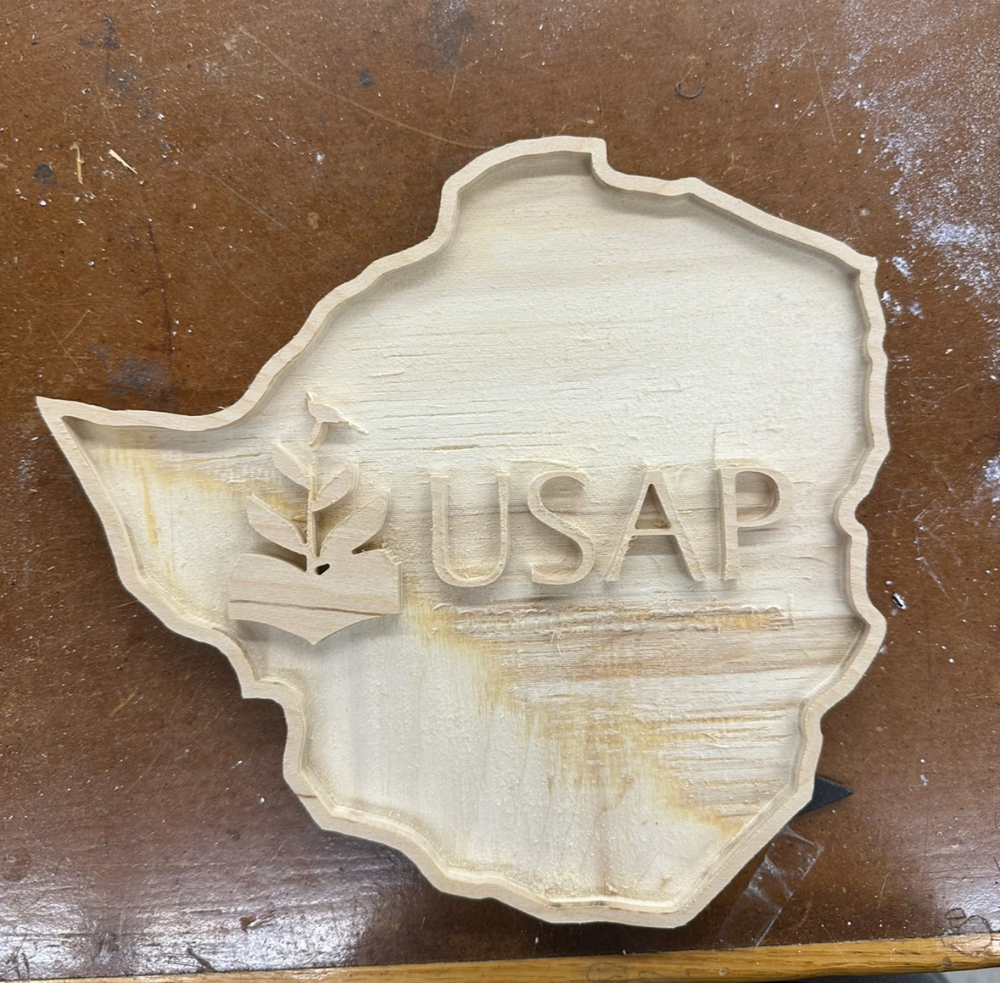
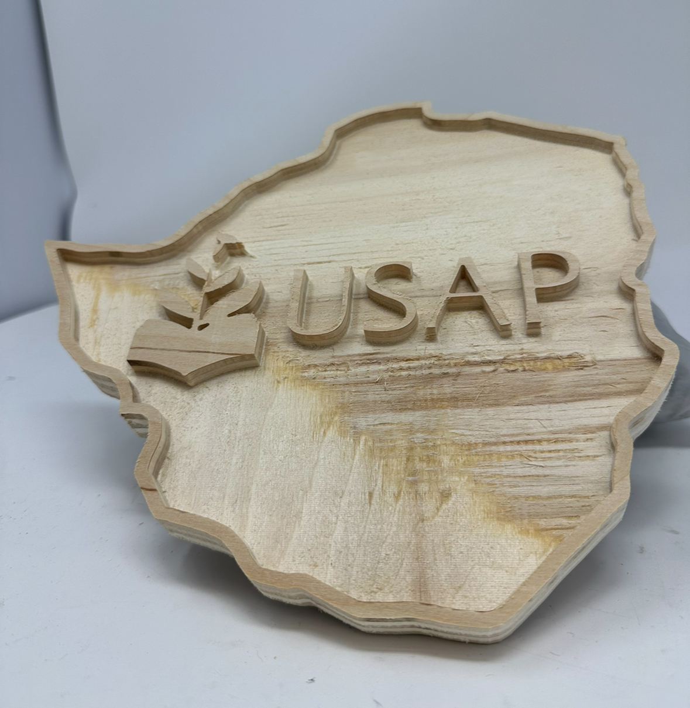
2. My Spidey Senses Are Tingling...
To show off some post-processing skills I also designed a Spider-man logo. The goal was to use the smaller
CNC mill to create wax mold and from that use silicon to make a soft mold. The soft mold would be used to
make a solid little Spidey logo from a harder material.
a silicon mold.
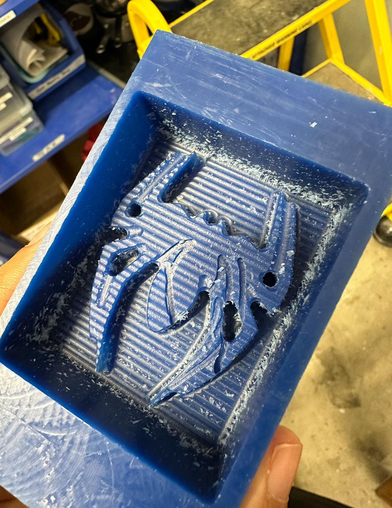
List of materials and resources used:
Smaller CNC Mill
Autodesk Fusion 360 software for modelling
Steps for making the Spidey mold:
Designing the Layout
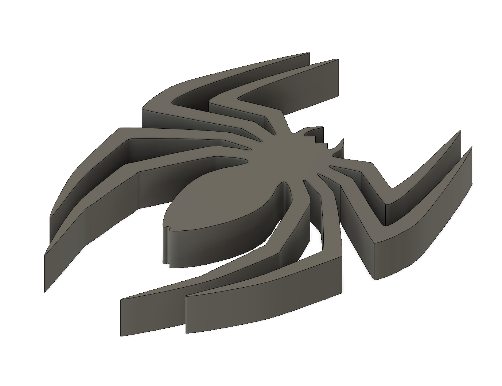
I used Fusion to model design. I used the canvas mode to insert an image of the logo and
then created a logo by tracing the image and using the mirror feature.
CNC Milling the Design
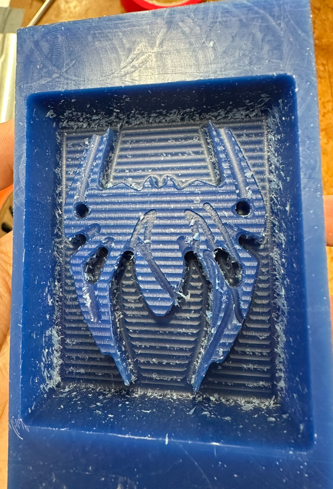
I used an 1/8 inch end mill for the rough cut and planned to use a 1/16 inch end mill for the
finish cut. Unfortunately my wax mold was removed from the machine before the
finishing cut was achieved, and I wasn't able to achieve the same detail as the design.
The main outline of the spider can still be seen (see in image above), however I would love to redo the mold to
see what it would have looked like with a finished cut.
Silicon Molding
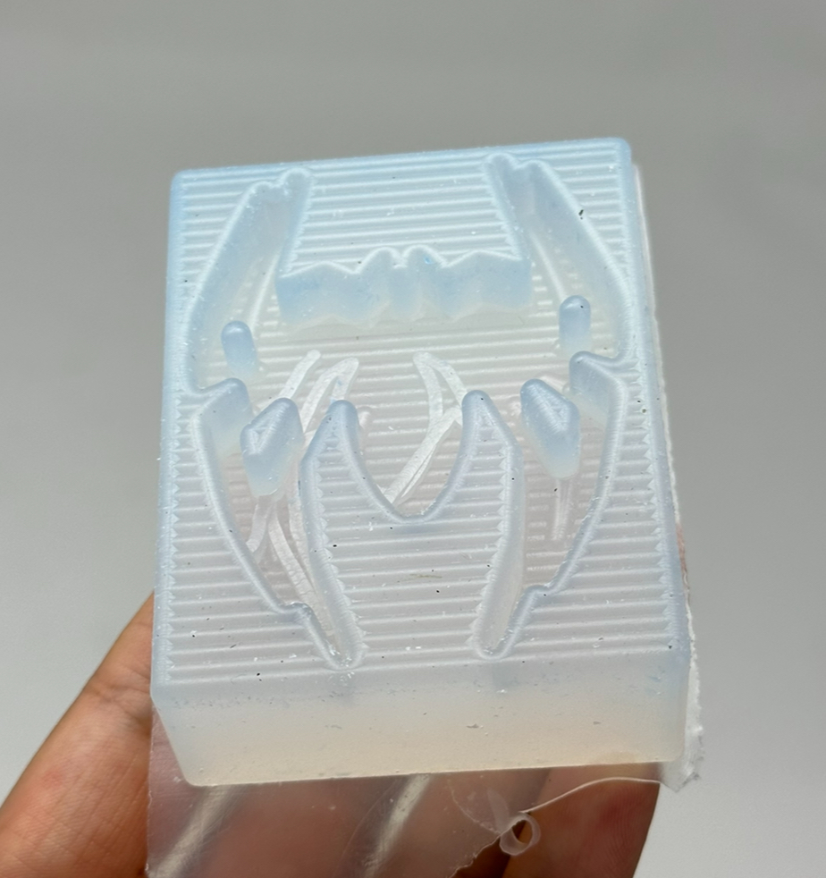
I then followed the instructions on the bottles and mixed silicon mold parts thoroughly.
After this I poured the mixture into my wax mold and let it set until the next day.
Metal Casting
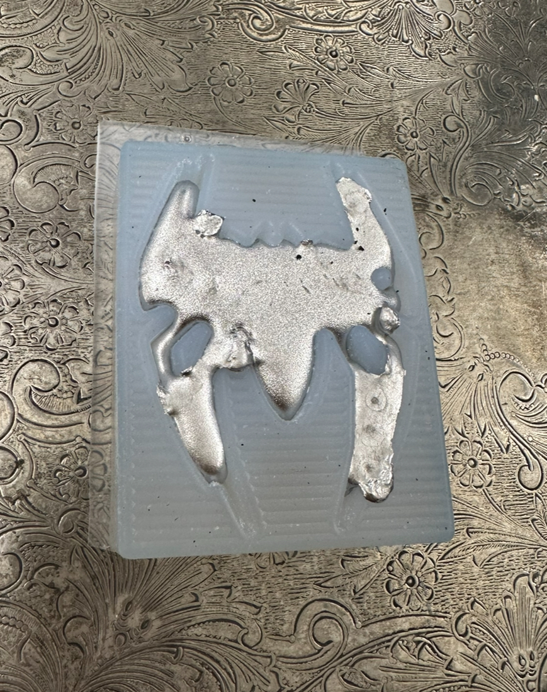
I melted metal in the microwave before carefully pouring it into my set silicone mold.
After allowing it to cool, I removed the cast metal piece which marked the end of the
post-fabrication process.